Desktop · 1440 × 1000
Number Forest

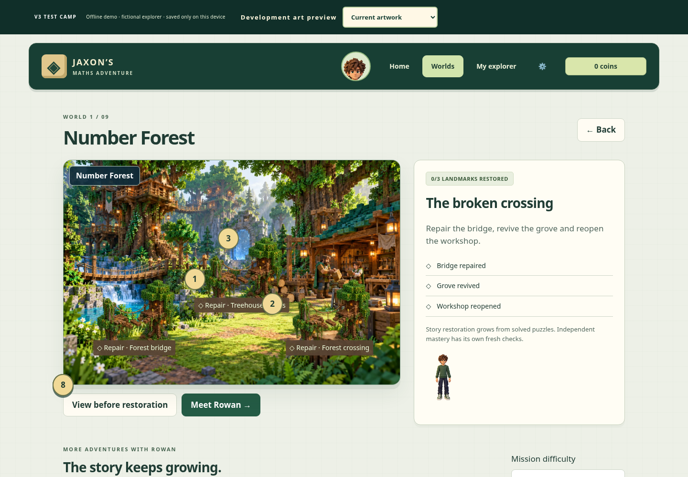

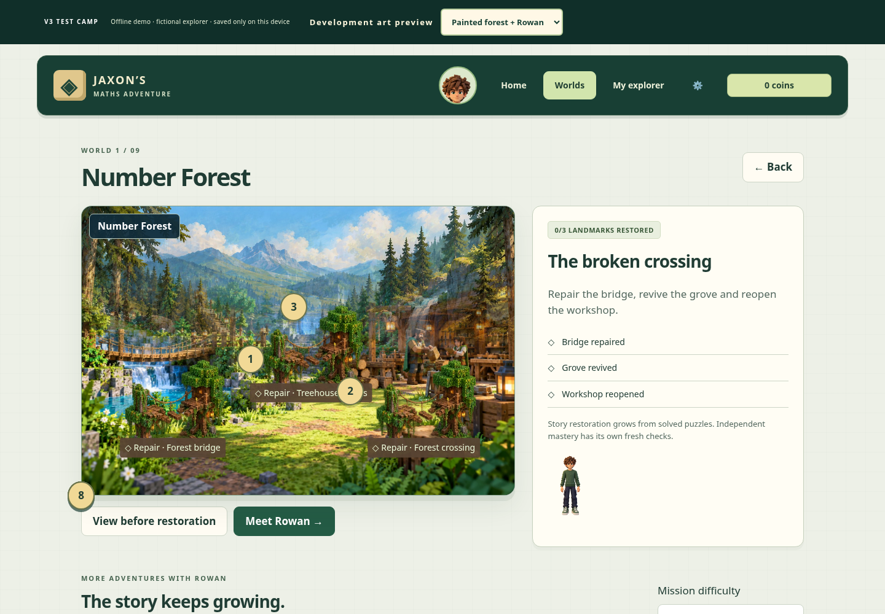
Rowan guide panel

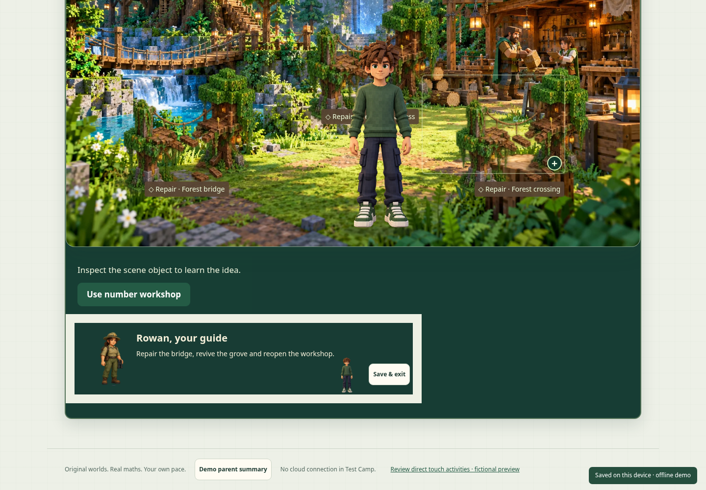

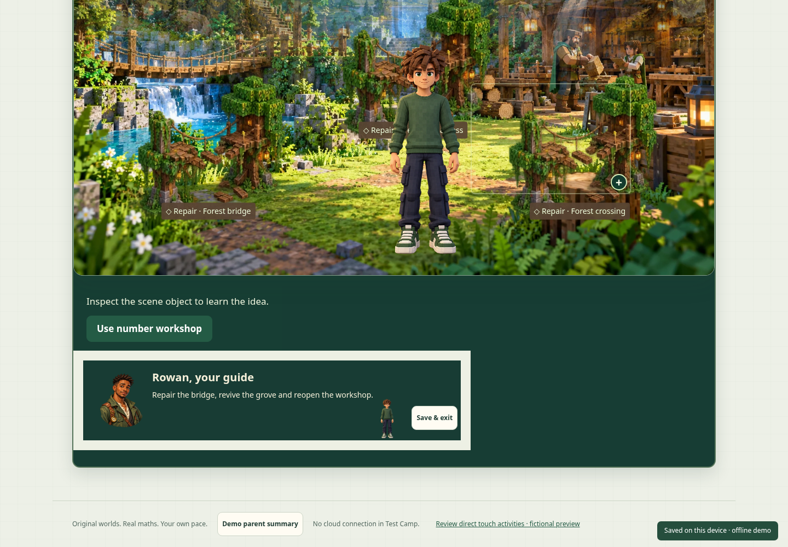


Development branch: codex/painted-forest-preview. Same fictional save and scene geometry in both art modes.
Play offline preview · Open with current artwork · Validation and visual notes




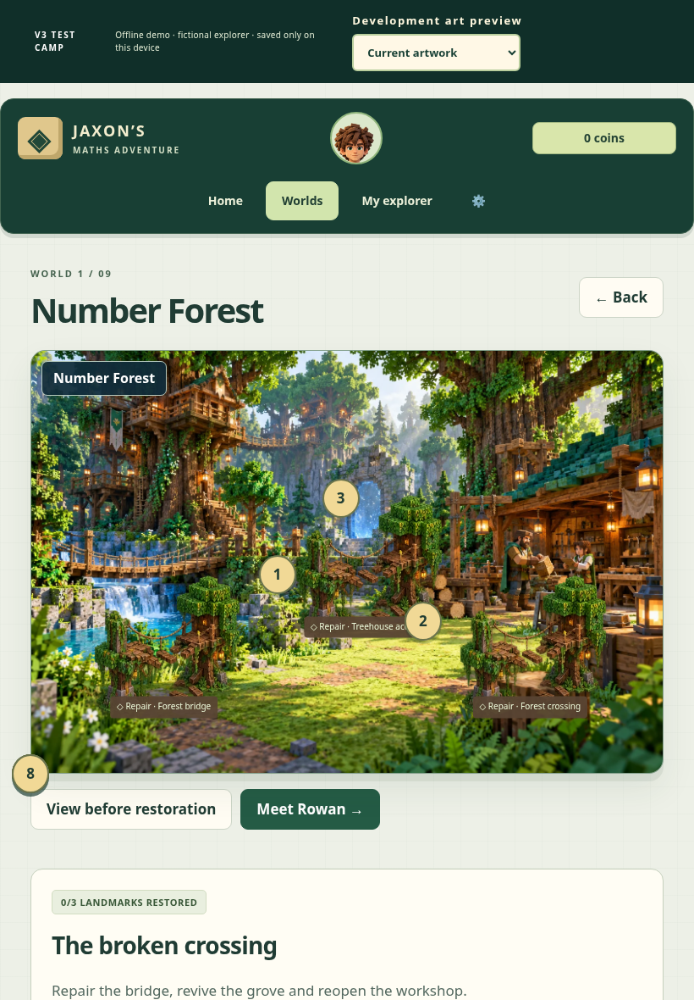
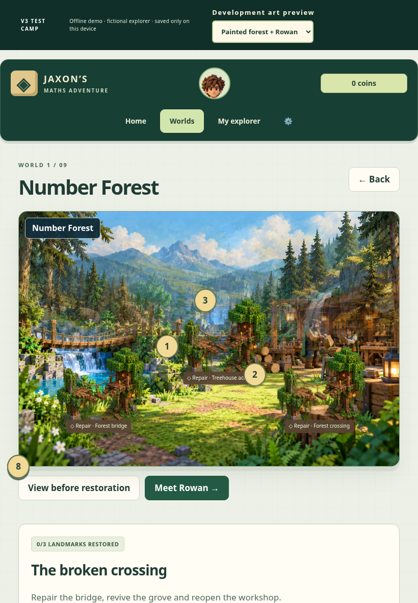
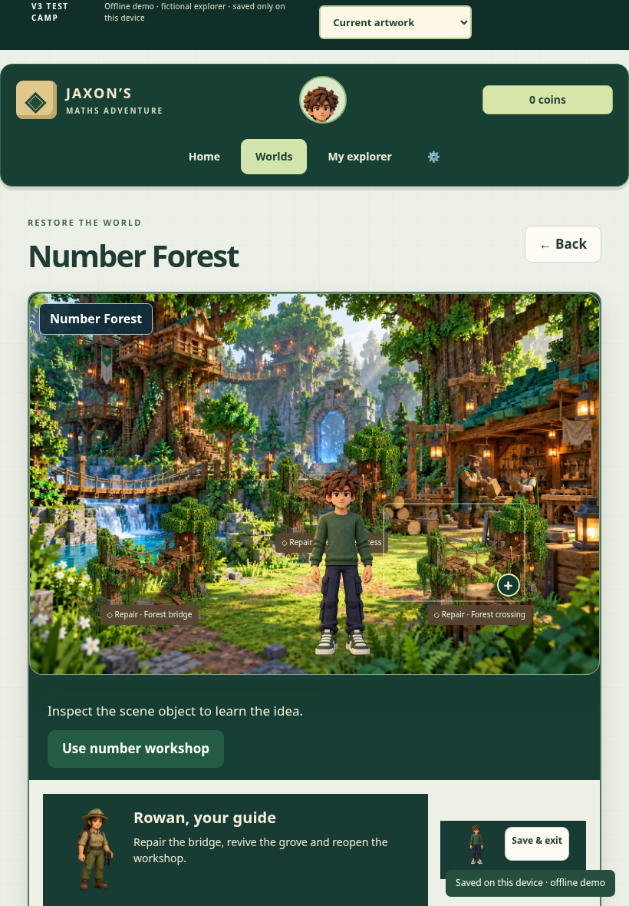
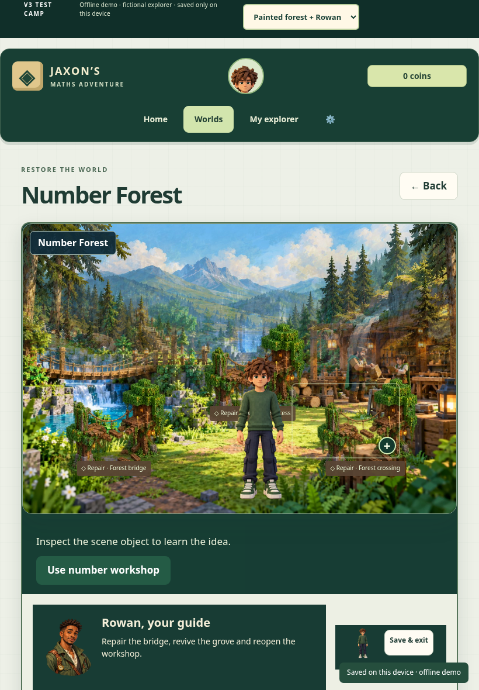

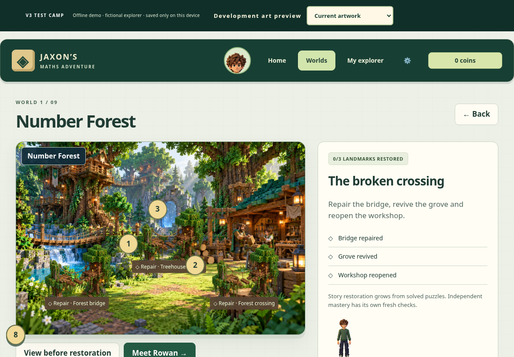
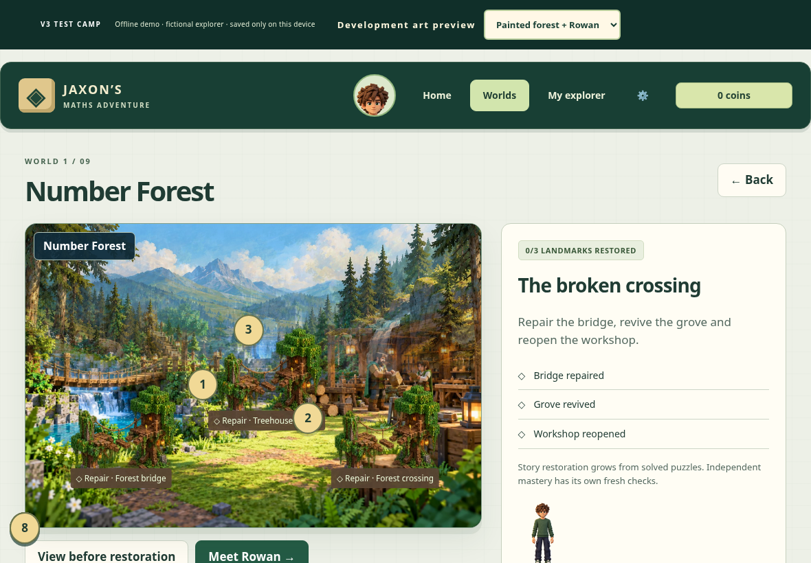
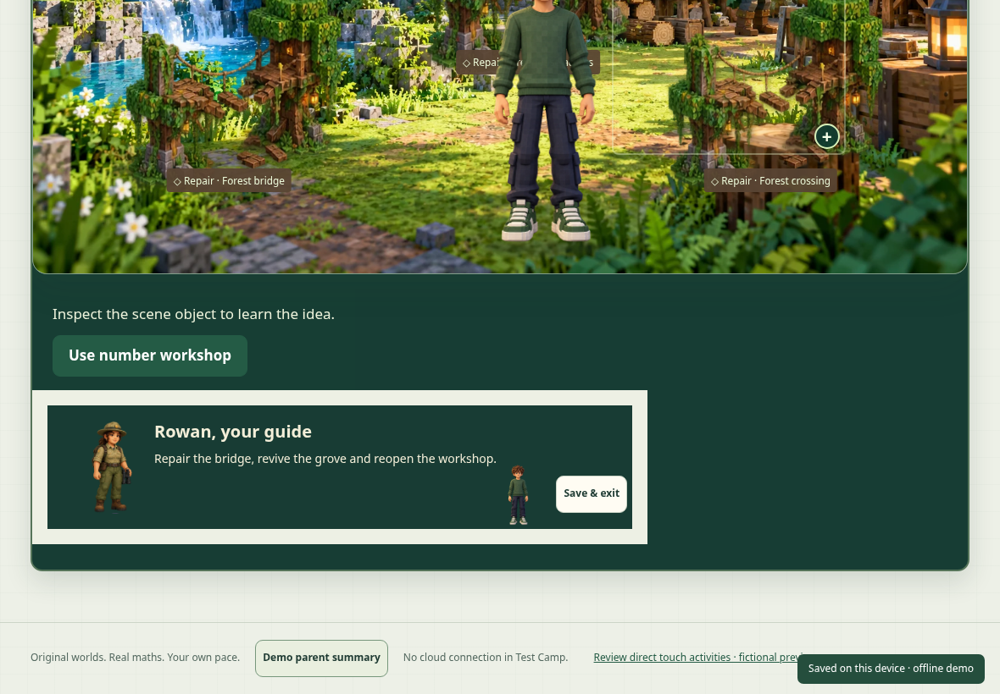
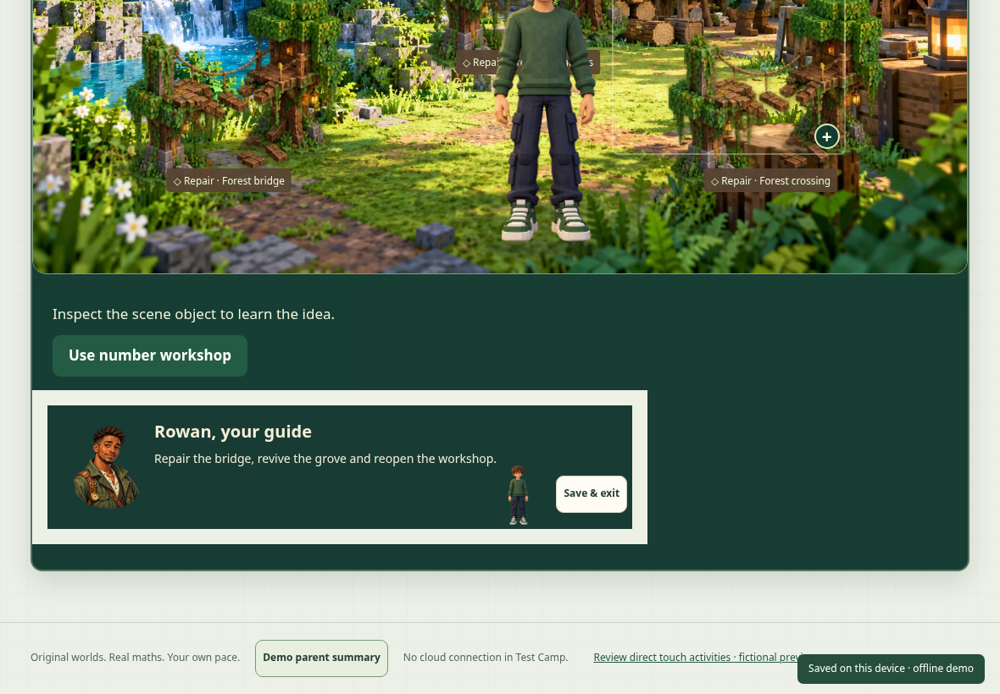